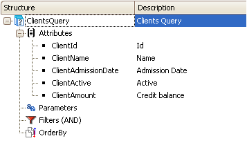
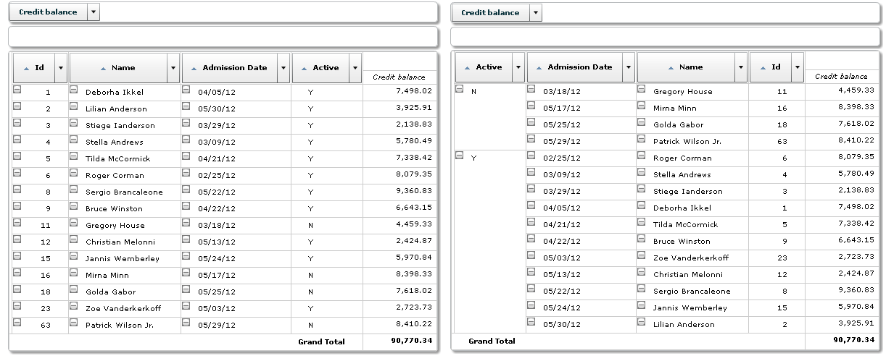

Sometimes it may happen that, so as not to duplicate a Query object by changing the sort order of its elements in a same area to change the view, the developer changes it at runtime. This property allows sorting the fields in the PivotTable according to the order set in the Query object, or the order in which the developer loaded the &Axes collection in the Web Panel in run-time. Values
ExampleIn the following example the property is set to True because the sort order in which the developer wants to show the Query object elements is different (reverse) than the order set at design time. 
Sub "SetAttributesOrder"
&Axis = New()
&Axis.Name = "ClientActive" // First
&Axes.Add(&Axis)
&Axis = New()
&Axis.Name = "ClientAdmissionDate" // Second
&Axes.Add(&Axis)
&Axis = New()
&Axis.Name = "ClientName" // Third
&Axes.Add(&Axis)
&Axis = New()
&Axis.Name = "ClientId" // Fourth
&Axes.Add(&Axis)
EndSub
 AllowChangeAxesOrder = False vs AllowChangeAxesOrder = True (the code work)ScopeOutput type Table, PivotTable |
| Backlinks | |
| Axis and Visible property refactoring | QueryViewer control properties |